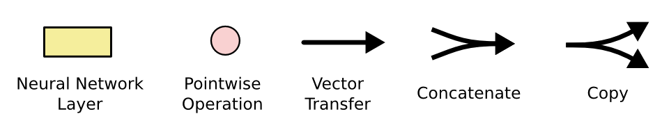
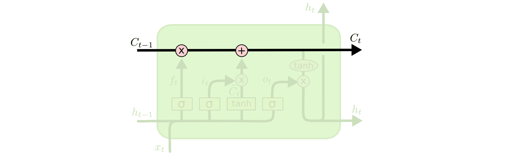
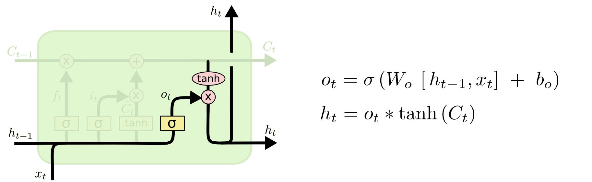

Recurrent Neural Networks
Selected topics in Deep Learning
in 6 hours or less
by Sergey Plis
Outline of the lecture
- RNN (recap)
- Vanishing gradients
- LSTM
- GRU
- Extreme length
RNN (recap)


RNN as a map
\begin{align} \vec{h}_{t+1} & = F(\vec{x}, \vec{w}, \vec{h}_t) \end{align}Back Propagation Through Time
\begin{align}
\pder{L}{\vec{w}^T} & \fragment{1}{= \pder{L}{\vec{h}^T}\pder{\vec{h}^T}{\vec{w}^T}}\\
\pder{L}{\vec{w}^{T-1}} &\fragment{2}{= \pder{L}{\vec{h}^T}\pder{\vec{h}^T}{\vec{h}^{T-1}} \pder{\vec{h}^{T-1}}{\vec{w}^{T-1}}}\\
\pder{L}{\vec{w}} & \fragment{3}{= \pder{L}{\vec{h}^T} \left( \pder{\vec{h}^T}{\vec{w}} + \pder{\vec{h}^T}{\vec{h}^{T-1}} \pder{\vec{h}^{T-1}}{\vec{w}} \dots \right)}\\
\pder{L}{\vec{w}} & \fragment{4}{= \pder{L}{\vec{h}^T} \sum_{k=1}^T \left( \prod_{i = T - k + 1}^{T-1} J_{F,\vec{h}} \left(\vec{x}, \vec{w}, \vec{h}^{i}\right)\right) \pderf{F}{\vec{w}}{\vec{x}, \vec{w}, \vec{h}^{T-k}}}
\end{align}


Long Short Term Memory


Skip connection
gates

Input

Carry or Forget

Output
Gated Recurrent Unit
GRU